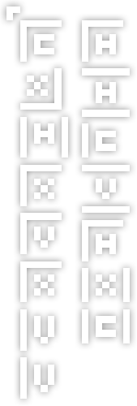

Who Are We?
We are a collective of musicians making music in a centuries old kingdom. Our kingdom is ruled by the council of core members along with their indispensable satellites. You can see all members of the ruling class here .
Why Are We?
Our kingdom was birthed from the picturesque rolling hills overlaying the kingdom of Xtrullor. In this kingdom (er, Discord server), the core members convened for the first time with the shared purpose of sonic creation. They were determined to forge a single musical track where all of them serve as participants in its creation - a megacollab. But alas, this undertaking isn't possible by any mere mortals. Despite the setback, the hopes and dreams of our heros remained unscathed. Instead, they spent the next few centuries starting a brand new kingdom - the kingdom of Dekabass. Ever since then, the ruling class of this new kingdom has been unendingly determined to create the best bass music possible, all the while building a community around that music.
When Do Our Next Releases Come Out?
We don't have an exact release schedule per se. But, there are still some regular releases..? it's complicated. You can read about it in releases .
Can I Be a Satellite Member?
Sure! Contact us to apply.
Can I Be a Core Member?
No.
Who Made This Website?
It was made by not_woowoo ;) with the help of core members and satellite members.
The Ancient Tale of Dekabass
There was once a quaint kingdom that lay on the hills between Au5ia and Shponggleland: the Kingdom of Xtrullor. It was an ordinary night in the kingdom. Locals stood at the center of anarchy in the streets while the king sat upon his majestic purple throne - busy with what the scholars called "real life." That night, a local bard found himself partaking in the art of conversation with some other local bards. Despite not having known each other before, the countless bards got along well. An outsider looking in could assume that they had known each other for ages before that fateful night. From the passing sparks of conversation, an idea hatched from within the narrows of one bard's mind. That bard took one look around the room, and released his idea into the open, "Yo, what if we did xtrulor server megacollab?!" Like a beacon of light illuminating a world submerged in eternal darkness, those simple words attracted attention and blossomed into intrigue from not only the bards, but also the peasants and even the pagans. A scramble of ideas from the collective minds of the kingdom ensued; the citizens started to form something new from the rubble of anarchy. Once the dust and debris of chaotic planning had settled, god rays shined as the sun peaked over the horizon, and the sun's warm light fell on 10 bards from the kingdom as if destiny itself hand picked the 10 bards to start something new. ​ A brand new kingdom was settled downhill from the old Kingdom of Xtrullor, and it was founded under the field of thought known as "Megacollab," where all the citizens of the kingdom would work towards one common goal of making an epic tune. A name was eventually decided for the new kingdom that honored its origins: Dekabass. "Deka" meaning 10 for the original 10 bards that settled the new land, and "bass" referring to the ancient art of "bass" in music. When the first houses and the town hall were erected on the fertile ground of the new lands, king Xtrullor of lands that were back so far up the hill mysteriously made himself present in the new lands, and he still remains to this day for reasons unknown. Progress of the new kingdom started as a burst, but soon dwindled as supplies inevitably ran low. Apathy and malaise now plagued the new land's governing powers, and major reforms were put in place - now, this kingdom no longer worked towards a single "Megacollab," but instead operated under the goal of establishing many new tunes from different bards around the world, but mostly the 10 that founded it - otherwise known as a "collective," or a "label." Ever since the early days of the kingdom, much has changed: the number of governing bards has changed, the old king Xtrullor renounced his position in government (but still remained in a village), and even the original "Megacollab" has since disintegrated into ashes of what it once was. But, the kingdom still serves as a means of creation; the creation of epic music. The future of Dekabass is a blur from where we stand in the present, but it isn't hard to see how bright it is.


